1 Introduction
The Model 725 is a fully programmable logic and timing controller for coordinating and synchronizing lab equipment and physical experiments. Model 725 provides clocks, counters, triggers, and many other useful functions, with 10 ns resolution and 100 ps accuracy.
The Model 725 consists of two components: timerPRO software and the Model 725 multi-trigger digital delay generator. timerPRO lets you design and run experiments from a simple graphical interface. The Model 725 provides the connections and control for your experimental devices.
Parts List
Your Model 725 package should include the following items:
- The Model 725 multi-trigger digital delay generator
- AC power cable
- timerPRO software installation CD
- 9-pin RS-232 cable
- User's manual.
If any parts are missing or damaged please contact technical support.
Specifications
timerPRO software will run on any computer running Microsoft® Windows® XP or later. Drivers for National Instruments'® LabView™ software are also available for download. See www.berkeleynucleonics.com for more information.
The Model 725 includes eight TTL-compatible inputs and eight TTL-compatible outputs. Voltages in the range 2.5–5 V are TTL "highs" and voltages in the range 0.0–0.2 V are TTL "lows." Intermediate voltages should not be present on inputs and outputs except during transitions. The inputs and outputs are protected against connection to 115 VAC. When disconnected the inputs are read as TTL "highs."
The Model 725 can be connected to / disconnected from the PC at any time without damage to either unit. This ability allows you to program the Model 725 at your computer, then to take the unit to the experiment area for stand-alone use.
Basic Functions
The Model 725 provides eight functional channels, or internal signal paths.
At any time, each channel can be assigned one of eight timing modes. Timing modes include clocks, counters, delayed pulses after triggers, etc. You can set various properties for each timing mode, for example, the delay length on a Delayed Pulse After Trigger. All modes are aligned to a precise, 100 MHz internal clock or an external clock, allowing resolution down to 10 ns.
Each channel also includes logic settings which specify the conditions that will trigger the channel. A channel can be triggered by any logical combination of signals from the eight inputs and/or the outputs of other channels.
The timing properties and logic that you set up in timerPRO can be transferred and stored in the memory of the Model 725. You can store up to 64 variations of these properties in settings profiles in the Model 725. You can then switch between settings profiles to switch experiments, compare different timing scenarios, or simulate different real world conditions.
All settings and setting profiles for a particular experiment can be stored as an experiment file on your computer. Experiment files bear a .trg extension.
How You Will Use the Model 725
In most cases, you'll use the Model 725 as follows:
- Using the timerPRO software, open an existing experiment file, or create a new file.
- In timerPRO (or LabView), program the properties and logic for each channel and for the experiment as a whole.
- Send the properties and logic to the Model 725's memory.
- Test your program by simulating triggers and examining the outputs using the Model 725's channel LEDs and/or an oscilloscope or other diagnostic tool.
- Store variations of channel properties in one of the Model 725's 64 settings profiles.
- Plug your experimental equipment to the Model 725.
- Run the experiment, using the Model 725 by itself or leaving it tethered to the PC. Switch between settings profiles to explore various timing conditions.
Installing timerPRO Software
Insert the timerPRO software disk in your computer drive and execute the setup.exe file.
Setting Up the Model 725
- Plug the power cable from the back of the Model 725 into a 100–250 VAC power outlet.
- Connect the 9-pin cable to the back of the Model 725 and to a free serial port on the PC.
- Press the Power button on the front of the Model 725.
- From your computer, run timerpro.exe to launch timerPRO.
- From within timerPRO, select View > Options > Com Port. The Serial Communications Properties screen will open.
- Select the port to which the Model 725 is connected. The Model 725 will automatically detect the baud rate, which is typically set to 38400. If the RS-232 cable running to your Model 725 is greater than 30 m long, you may need to lower the baud rate to achieve reliable communication.
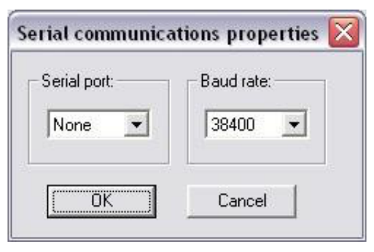
Field Upgradeable Software
The firmware in the Model 725 is field upgradeable, allowing access to new timing modes and capabilities as they become available.
To upgrade the firmware, download the latest version from www.berkeleynucleonics.com. Then choose Program > Update Firmware to load data from that file.
Getting Help
This guide is your main source for information on operating the Model 725 and timerPRO software. The guide is also available in an Adobe® Acrobat® (pdf) file for electronic viewing.
While running timerPRO, press F1 to view this document online. Or, press SHIFT-F1, then select a button or menu option to view help topics for a particular feature.
www.berkeleynucleonics.com also includes helpful applications notes and other technical information to help you use the Model 725.
If you are unable to find the information you need, please contact our technical support team at +1 (800) 234-7858, or e-mail us at info@berkeleynucleonics.com.
If you need to contact support, please let us know your Model 725 serial number (located on the bottom of the unit) and the version of software you are using. To determine the software version, select Help > About timerPRO.
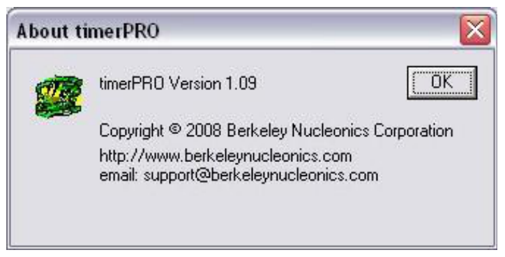
Overview of Model 725 Controls
The Model 725 is the control unit and interface for your experimental equipment. You will program it using the timerPRO software. Once you've designed, tested and downloaded your program, you can control the Model 725 from the computer, or you can run it in stand-alone mode.
Indicators and controls on the Model 725 front panel will help you run your experiments. You'll learn all about these functions in the Experimenting section later. For now, we'll give you a short tour of the inputs, outputs and controls so you can work with the unit while you learn to use the timerPRO software.
Back Panel Inputs and Outputs
The back panel includes the following connectors:
- an internally-fused jack for a standard 100–250 VAC power cord
- a 9-pin RS-232 jack to connect to the Com port of your PC
- eight BNC channel input jacks (in1–in8), normally high (5 V)
- eight BNC channel output jacks (outA–outH), normally low (0 V)
- a BNC input jack for an external clock source.
The inputs and outputs will accept any device that sends or receives TTL-compatible signals.
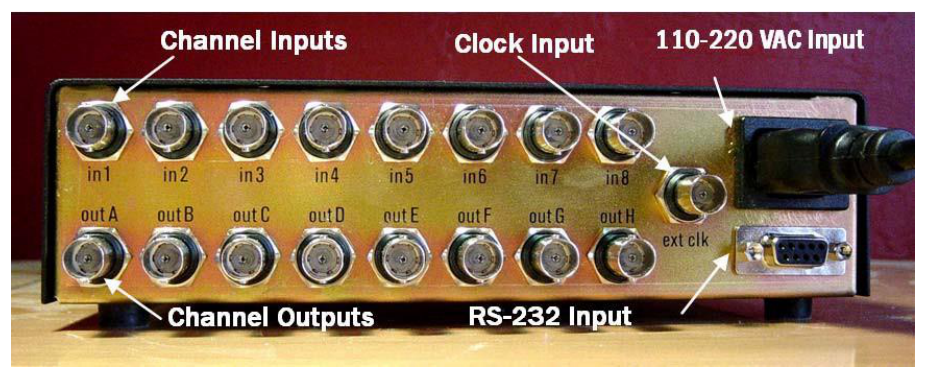
Front Panel Controls
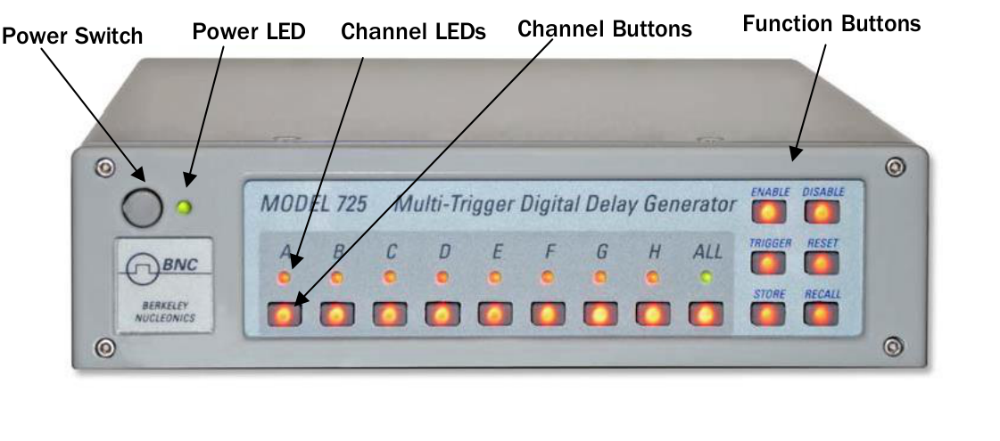
The Model 725 front panel controls begin with the Power button and Power LED in the upper left corner. When you first press the Power button, the LED will flash green and red while the system runs its initial diagnostics. It will then glow steadily: if it glows a steady green, the front panel is unlocked and accepting button pushes; if it glows red, the front panel is locked (see timerPRO Software Interface: General Settings below). Even the power switch will be deactivated, safeguarding against mis-setting or tampering.
The channel LEDs offer useful information about the state of each channel. A green light typically indicates that the channel is ready to receive a trigger. A red light typically indicates that the channel is in the process of triggering. When a channel indicator is off, the channel is disabled (see Running Experiments: Enable/Disable Channels). More will be discussed in the Timing modes section.
The All Channel LED shows the status for all channels. A green LED indicates that the Model 725 will respond to external inputs and that the external outputs are active. A red LED indicates that the Model 725 will not respond to external inputs and that outputs are in a fixed and frozen logical state.
The Channel and Function Buttons work as pairs, you will select one of each to perform any function. In the base state, all buttons glow dimly, indicating that they're ready for your instruction. Once you press a channel or function button, only the available options will be illuminated.
2 Software Interface
timerPRO has been designed exclusively for setup and control of the Model 725. You'll use timerPRO to set the timing properties and logic for each of the eight channels and to set up overall properties for the experiment.
Main Screen
When you run timerPRO, you'll be greeted by the Main screen:
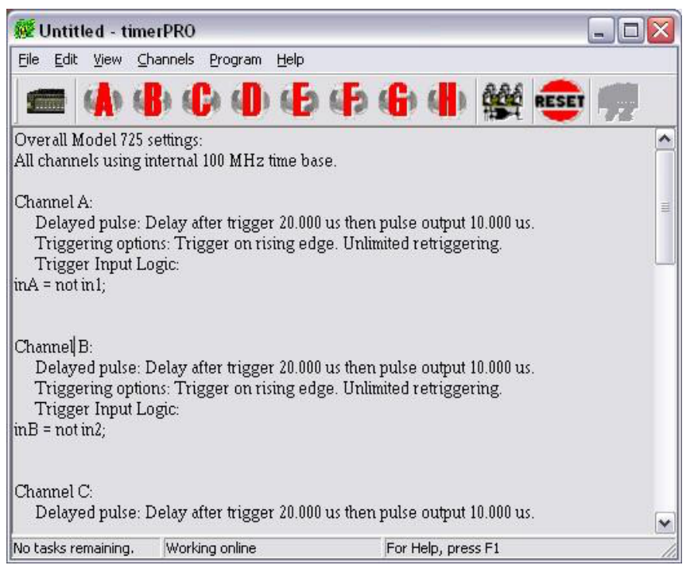
From this screen you'll control or access all of timerPRO's functions. Most timerPRO functions can be accessed in two ways: by selecting an option from a pull-down menu or by pressing a button on the Main screen.
- Menu options: The File menu lets you open, close and save experiment files (.trg files). The Edit Menu lets you cut, copy and paste text as you edit your program.
The View menu lets you set up the timerPRO interface. Choose to display or hide the tool bars and status bar, select the font used in timerPRO, and set up communications with the Model 725.
The Channel menu lets you open the screens for General Settings and for each of the eight channels.
The Program menu includes options for communicating with the Model 725. You can send logic, send properties, reset all channels, or enable / disable the Model 725's inputs and outputs. - The buttons are as follows: The General Settings button opens the General Settings screen. The Channel buttons open the Settings screens for all channels.
The Program button updates the Model 725 with all current settings.
The Reset button resets all channels of the Model 725. Retriggering Counters and delay settings will be reset as well.
The Main window panel shows a text summary of all of the settings in the current experiment. This summary may be printed for review and documentation purposes. The text is not freely editable and must be modified through the dialogs. Double-clicking on selected parts of the summary opens the dialog needed to edit the text.
At any time, the Model 725 control bar can be hidden or displayed by clicking View > Model 725.
General Settings
The General Settings screen lets you control functions that affect all channels of the Model 725. To reach this screen, click the General Settings button, or choose Channel > General.
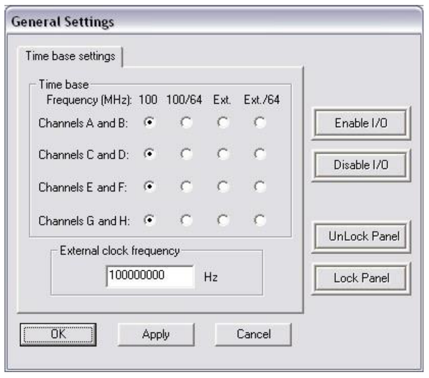
Disable/Enable I/O
On occasion you will need to abort an experiment or quickly place all outputs to your equipment in a "safe" state. Each of the tabs of the General Settings screen includes buttons that let you "disable" and "enable" all inputs and outputs to the Model 725. With I/O disabled, input signals are ignored. Each output will be held at either a logic low or logic high, depending upon its channel properties. We'll refer to the "safe" voltage that a channel produces when disabled as the "quiescent state" (see Channel Properties: Quiescent States).
To restore channels functions, click the Enable I/O button. These functions are nonvolatile: the enabled and disabled states are restored on power cycle.
You can also disable or enable inputs and outputs from the Model 725 front panel (see Experimenting: Disable/Enable All).
Lock/Unlock Panel
Lock or unlock the front panel buttons using the Lock Panel and Unlock Panel buttons. This functionality is handy, for example, in an embedded control application where the Model 725 should function only in stand-alone or computer-controlled modes. When the panel is locked, the LED next to the power button glows a steady red and all buttons are dark. When the panel is unlocked, the power LED glows green and the front-panel buttons are illuminated.
Like the enable/disable I/O functions, these settings are nonvolatile and are restored on power up. Because the power button is disabled, the Model 725 must be disconnected from AC power to turn it off, if the front panel is locked.
Time base settings
Each pair of channels of the Model 725 can independently utilize one of four different time bases so you can control and measure events which occur a few nanoseconds apart, or a few hundred seconds apart.
In 100 MHz time base mode (the default), the Model 725 aligns signals to an internal 100 MHz clock, for timing resolution of 10 ns. Use this "high resolution" mode when the events of your experiment occur in rapid succession (milliseconds or less).
100/64 MHz time base mode allows the Model 725 to control events that occur over longer time periods (milliseconds to minutes). This is called "low resolution" mode in the following documentation.
In Ext. time base mode, the channels use an external clock input for the time base. This input must be TTL-level between 1 and 100 MHz applied to the External Clock (ext clk) input on the back of the Model 725. This function allows the use of high-precision or variable-frequency time bases. It also allows multiple Model 725s to be synchronized to the same base.
The External time base cannot be produced by a channel that uses the same time base as an input.
Ext./64 time base mode divides the frequency of the signal applied to the external clock input before using it as a time base. If the external clock is being used as a time base, the frequency entered into the edit box is used to calculate the timing settings. If this setting is 10% higher than actual, the channels using this time base will be 10% long on delays and duration.
3 Channel Properties
Channel Properties Screen
Each channel has a Settings screen in which you'll select the timing mode, set the timing properties, and establish the logic that will determine when the channel will trigger.
To open the Settings screen for a channel, select the channel from the Channel menu, or click a channel button (A–H) on the Main screen. You can open more than one channel screen at a time.
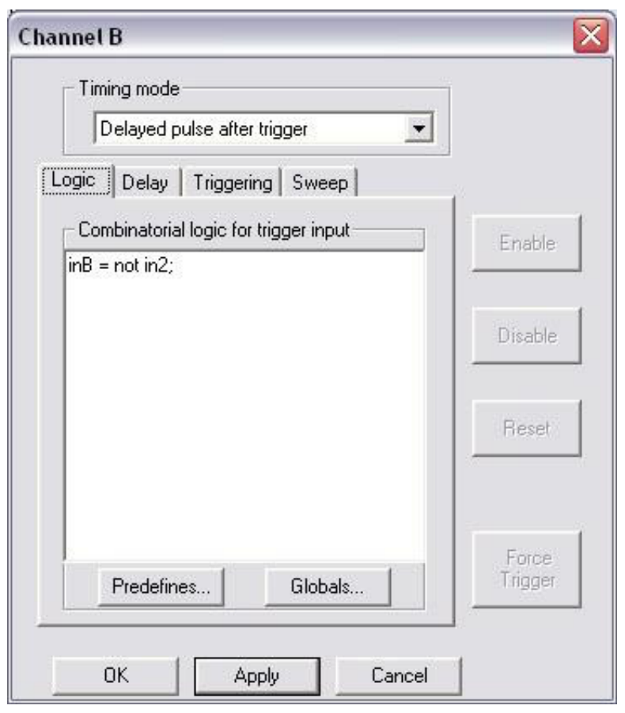
Channel properties are organized by tabs. The tabs that are relevant for a particular timing mode appear automatically when that timing mode is selected. For convenience, all settings are retained and saved, including those for timing modes that are not currently selected.
Four additional buttons appear next to the tabs:
- Disable temporarily disables the channel. The channel remains fixed in its "quiescent state" (see Quiescent States below). The front panel LED for that channel will be unlit (See Running Experiments: Channel LEDs).
- Enable restores channel functions following a temporary disable. The front panel LED for that channel will glow to indicate the channel's status.
- Reset reinitializes the internal trigger counters and sweep timing for the current channel. This function can be called simultaneously for all channels by pressing the Reset button on the main tool bar.
- Force Trigger lets you simulate a valid input signal for the channel (see Channel Properties: Logic for more). This button, which is only available with functions that can be triggered, is useful both for troubleshooting your channel settings and implementing software control of experiments. You can also force-trigger a channel from the Model 725 front panel (See Running Experiments: Force Trigger).
Quiescent States
When you disable a channel, its input will not change the output. The "quiescent state" of a channel is the setting of its output when the channel is disabled. You can set each channel's quiescent state to be a TTL high (3.5–5 V) or low (0–0.2 V) to provide a safe signal to the output device if you need to abort an experiment or stop its progress.
The method for setting the quiescent state depends on the timing mode. Most modes include an Invert Output option which sets the output normally High.
Logic
A channel can be triggered by any combination of signals from the eight inputs and/or other channel outputs. Channel logic determines the combination of signals that triggers the channel.
The diagram below shows the architecture of the Model 725. Note that any inputs and outputs can trigger a channel without external cabling.
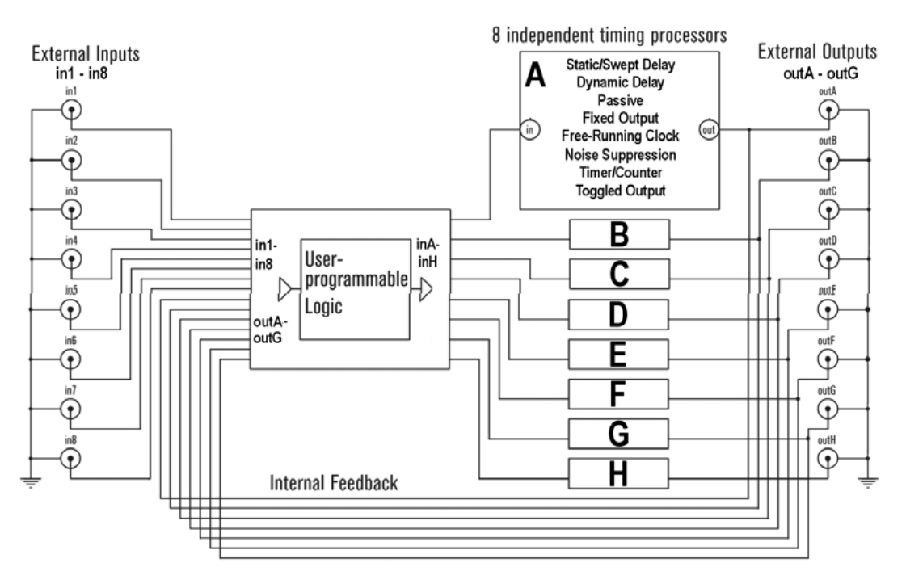
To define when a channel will trigger, open the channel's Settings screen then click the Logic tab. This tab only appears for timing modes which respond to logic. You will enter a logic assignment for the channel in the large white box.
Logic Assignments
The logic processor assigns the combination of external inputs (in1–in8) and channel outputs (outA–outG) that will trigger each channel. Logic assignments always appear in the following format:
[the channel to be triggered] = [the conditions that will trigger it];
External inputs and channel outputs feed into the logic processors; therefore, they appear only on the right side of assignments. Logic processor outputs feed the timing channel inputs inA–inH; these terms appear only on the left side of assignments.
Here is an example:
inB = in2;
This assignment means, "Channel B will be TRUE when Input 2 goes TRUE (reaches ~ 5 V)." The assignment:
inB = not in2;
means "Channel B will trigger when Input 2 goes FALSE (drops below 0.2 V)." You can employ compound arguments in logical assignments, such as:
inB = not outC and in2;
This means, "Channel B will trigger when the output of Channel C is FALSE and Input 2 is TRUE."
This example is more complex still:
inB = (in1 or in2) and (outC or outD);
Here, Channel B requires a TRUE signal from Inputs 1 or 2, combined with a TRUE signal from Channels C or D, in order to trigger.
It is important to distinguish between the eight physical input jacks, in1–in8, and the eight timing channel inputs. Any combination of the physical inputs can be used to trigger the channel inputs. The following assignment is incorrect:
outA = in1;
because it attempts to trigger a channel output rather than a channel input, inA–inH. This assignment is also invalid:
in1 = in2;
because it attempts to assign a value to External Input 1. Finally, this assignment is invalid:
inB = inA;
because it attempts to assign a value from one channel input to another.
Parsing
When you have completed a logical assignment, click the Apply button. timerPRO will check your syntax and logic and will report any mistakes to you by line number.
Sending Logic
If you change channel logic you must transfer those changes to the Model 725 to implement them.
To transfer logic to the Model 725, click the Set All Channels button, or choose Program > Program All Channels.
While the logic is transferring, the Power LED on the Model 725 will turn red. This transfer typically takes only a second, though it may take slightly longer for complex programs.
After the transfer, the logic settings reside in the Model 725, even if you turn the unit off or disconnect it from the PC.
Experimenting With Channel Logic
This brief example will show you more about channel logic:
- Connect a normally-open switch to Input 1 and another to Input 2.
- Connect an LED to Output A.
- Open the Channel Settings screen for Channel A.
- Choose Output = Input from the Timing Mode list. In this mode, the output of Channel A is always the same as its input.
- Select the Passive tab and choose Output = Input.
- Select the Logic tab and enter:
inA = in1; - Click the Set All Channels button.
The LED at Output A should be glowing, indicating that the output is TRUE, or HIGH (since Model 725 inputs are normally HIGH). When you close Switch 1, the LED will turn off, indicating that the output is FALSE, or LOW.
- Next, change the logic assignment to:
inA = not in1; - Click the Set All Channels button. The LED at Output A will now remain off until you close the switch.
- Change the logic assignment to:
inA = not in2; - Click the Set All Channels button. The LED at Output A will now remain off until you close Switch 2.
- Lastly, change the logic assignment to:
inA = not in1 and not in2; - Click the Set All Channels button. The LED at Output A will remain off until both switches are closed.
Rules for Logical Assignments
The following rules apply to logical assignments:
- Logic is case-sensitive. Use lowercase and capital letters as in the samples above.
- Spaces matter. Use spaces per the samples above.
- If a logical assignment consists of more than one line, each line should end in a carriage return.
- The last line of a assignment must end in a semicolon.
- You can add comments to annotate your logic assignments. Single line comments begin with //. Multi-line comments begin with /* and end with */.
- Many symbols can be written using C-Style programming commands. For example, "not in1" can be written "!in1".
The following symbols can be used in logical assignments:
| Symbol | Shorthand |
|---|---|
| not | ! |
| and | & |
| or | | (vertical line) |
| xor | # |
| HIGH | none |
| LOW | none |
| ( ) | none |
| ; | none |
Predefined Variables
timerPRO includes a number of Predefined variables to speed logic coding. To view the variable names that are recognized by timerPRO, click Predefines on the Logic tab.
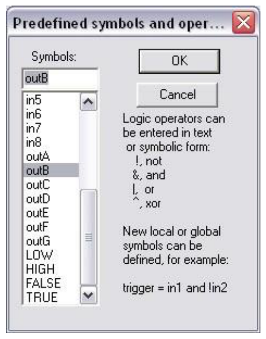
- inA–inH: the input of channels A through H. These signals only appear internally at the input of the timing channel; they are not connected to the rear BNCs. These symbols can only be on the left-hand side of an assignment.
- in1–in8: inputs 1 through 8 from the rear BNC connectors.
- outA–outG: outputs of channels A through G that appear at the rear BNC connectors.
- LOW, FALSE: trigger input always low.
- HIGH, TRUE: trigger input always high.
Double click a variable to copy it to your Logic assignment. You can also select the variable then click OK.
Global Variables
"Local Variables" are those that are used directly in logic assignments, such as "inA" or "out1." Logical assignments that are used repeatedly in your experiment can be stored as "global variables." With global variables, complex logic is easier to read and debug.
Several channels in your experiment may need to be triggered by the same event. For example, Channels F, G and H must trigger when:
(in1 or in2) and (outC or outD).
Rather than typing that logic each time, you may define it as a variable:
event1 = (in1 or in2) and (outC or outD);
Now you can use "event1" in the logic for Channels F, G and H:
inF = event1;
To view the global variables, click the Globals button on the Logic tab. The Global Symbols dialog box screen will open:
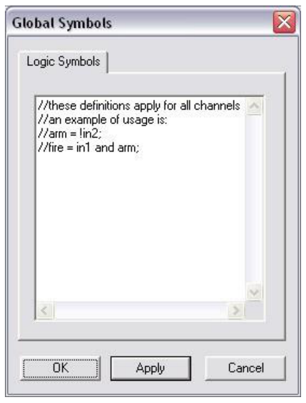
To create a new global variable, type the variable's name followed by its definition. In this example we've defined variables named "arm" and "fire." Be sure to end your definition with a semicolon. Click Apply to save the variable.
Timing Modes
In the previous section you learned that logic defines how channels are triggered. In this section you'll use the Model 725 timing modes to determine how the channels will respond.
Each channel can be configured to operate in one of eight modes:
- Fixed output
- Output=Input (Passive Mode)
- Delayed Pulse After Trigger
- Clocked Pulse Stream
- Validated Trigger Input (Noise Suppression)
- Dynamically Delayed Pulse
- Timer
- Toggled Output.
When a timing mode is selected, the relevant property tabs will be displayed.
For each timing mode you'll be able to set up a simple example to view the output of the channel.
To set up for the experiments later in this section:
- Make sure that the Model 725 is connected to the PC.
- Plug a normally open push-button trigger switch into Input 1. The button will represent our triggering "event."
- Open Channel A's Setting screen, and select the Delayed pulse after trigger timing mode (you'll learn about Delayed Pulse After Trigger mode shortly).
- Select the Logic tab. Enter the logical assignment:
inA = not in1;
Then click OK. With this logic, Channel A will trigger when you depress the external trigger button (connected via BNC cable).
- Now transfer the logic to the Model 725 by clicking the Set All Channels button.
- Plug an oscilloscope to Output A to observe the channel output. Remember, the output voltage will vary from 0 to 5 V.
"Apply" versus "Program All Channels"
Each properties screen includes an Apply button which, when clicked, will send the current timing properties to the channel on the Model 725.
Logic settings are sent and saved in the Model 725, but any changes are not implemented on the Model 725 until you click Set All Channels button or choose Program > Program All Channels.
Program All Channels is the same as clicking Apply for all channels and then instructing the Model 725 to update its logic programming.
The Cancel button cancels any edits made since the last time the Apply button was clicked and closes the dialog window.
Fixed Output Mode
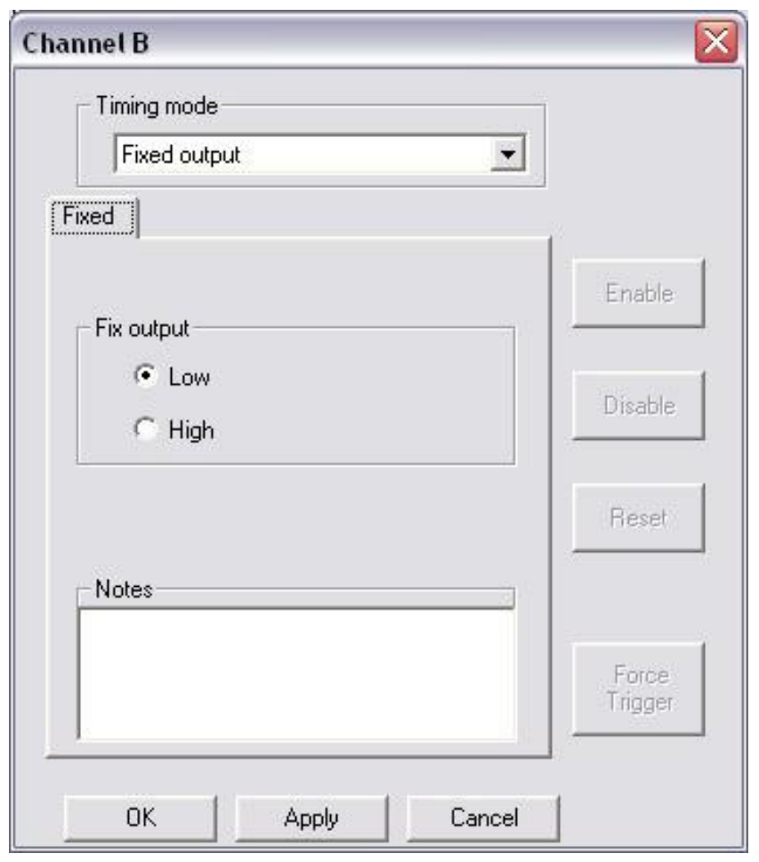
In this mode, the channel output remains in the selected state (Low or High), regardless of the input. The front panel LED for the channel will glow green when the output is low or red when the output is high.
To try fixed output mode: On the Properties tab of Channel A, choose Fixed Output from the pop-up. Choose Low or High as the output state, then click Apply to save the settings. At Output A, the signal will remain a steady TTL logic low or high, depending on your selection.
Passive Mode (Output = Input)
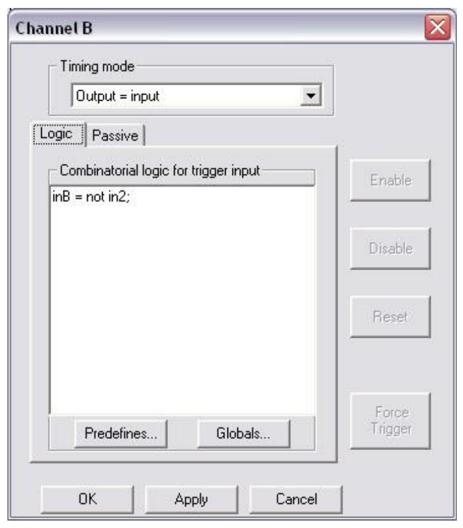
In passive mode, the output signal equals the input signal or its logical inverse. The front panel LED for the channel will glow green when the output is Low or red when the output is high.
To try passive mode: On Channel A's Settings screen, select the Output=Input timing mode. In the Function box, choose Output=Input, then click Apply to save the settings.
When the external trigger button is not depressed (i.e., the input signal is low), the signal at Output A will be a TTL low. Now, depress the trigger button at Input 1, the signal at Output A will go high. If you select Output=!Input (invert), the channel output will remain high until you depress the trigger.
Clocked Pulse Stream Mode
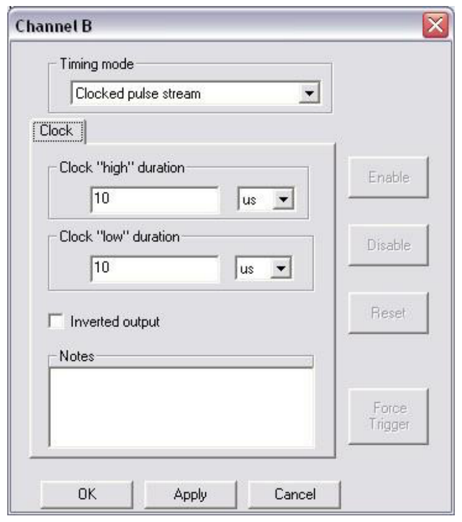
In clock mode, the output of the channel is a steady stream of pulses. You set the pulse duration and delay between pulses. A clock channel's input does not affect its output. The front panel LED for a clock channel will glow green when the output is low or red when the output is high.
As mentioned earlier, the Model 725 can operate in two internal clock modes: 100 MHz high resolution and 100/64 MHz low resolution (see General Settings: Time Base Settings). In high resolution mode, the clock pulse and duration can range from 0.48 µs to 52.4 ms. In low resolution mode, pulse and duration can range from 30.1 µs to 3.35 s.
To set the duration of the high state, select the timing units (seconds, microseconds, milliseconds or nanoseconds) from the pop-up, then enter a duration in the Clock high duration box.
To set the duration of the low state, select the units, then enter the duration in the Clock low duration box.
A clock's quiescent state is normally low (See Channel Properties: Quiescent States). Check the Inverted output box if the quiescent state for the channel should be high instead.
To try Clock mode:
- On the General Settings screen, select 100/64 (low resolution mode) for Channels A and B.
- Click OK to save the change. A warning may appear listing channels for which the clock range settings are invalid. Click OK to close the warning. The software will go into "offline" mode allowing you to adjust the timing settings for the listed channels.
- On Channel A's Properties tab, choose Clocked Pulse Stream as the mode, select a High duration of 100 ms and a Low duration of 500 ms.
- Click OK.
- Go "online" and click Program > Program all channels.
The signal at Output A will go high for 100 ms, go low for 500 ms and continue to repeat.
To test faster clock settings, select 100 (high resolution) mode under General Settings, then set duration and delay times of less than 52 ms.
Delayed Pulse After Trigger Mode
Upon receiving an input signal, a delayed pulse after trigger waits a specified delay time, then sends a pulse to the channel output. This mode has several property tabs.
Delay
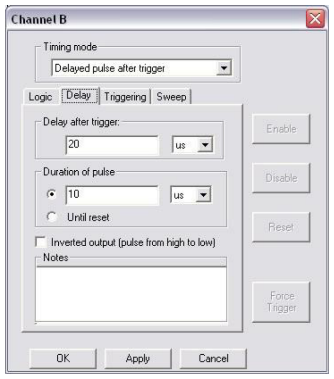
On the Delay tab you'll specify:
| Setting | Description |
|---|---|
| Delay after trigger | The delay between a valid trigger and an output signal |
| Duration of pulse | The duration of the output signal |
| Until Reset | The output will remain high after a valid trigger, until the channel is reset |
| Inverted Output | Check the box to set the output high until a valid trigger. |
The range of settings you can use with the delayed trigger depend upon the current timing mode:
| 100 (high res mode) | 100/64 (low res mode) | |
|---|---|---|
| Delay range | 20 ns to 21.47 s | 1.28 µs to 1374 s |
| Duration range | 7.7 µs to 21.47 s | 493 µs to 1374 s |
| Delay / Duration resolution | 10 ns | 640 ns |
Triggering
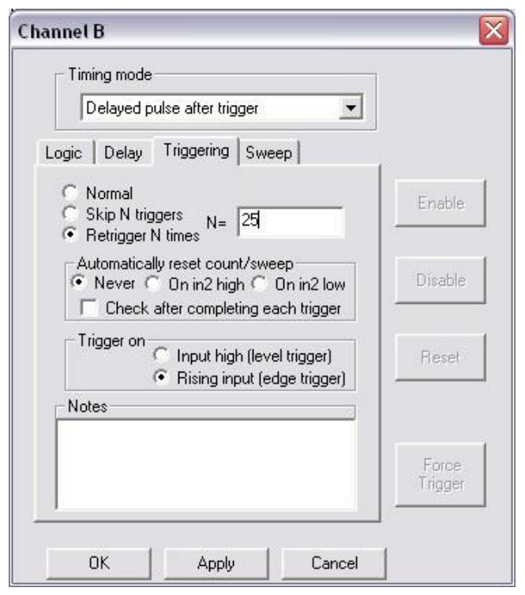
This tab lets you control how the channel will trigger:
| Setting | Description |
|---|---|
| Normal | The channel can retrigger an unlimited number of times |
| Skip N triggers | The channel triggers only after the specified number of input pulses (between 0 and 2,147,483,647). |
| Retrigger N times | Limits the number of retriggers allowed between resets (between 0 and 2,147,483,647). To allow a channel to be triggered again after reaching the limit, press the Reset button on the Model 725 or choose Program > Reset Channels in timerPRO. |
| Trigger on rising input | Sets the channel to be edge triggered. In other words, an input signal that stays high triggers the channel only once. |
| Trigger on input high | Allows the channel to be repeatedly triggered while an input is high. This setting could be used for generating a low-precision gated clock, for example. However, the latency time between retriggers is indeterminate (typically around 10 µs) so a clock made this way is not suitable for applications requiring high precision. |
| Check after completing each trigger | Check this box to send a "ping" to the computer following the cycle. |
Sweep
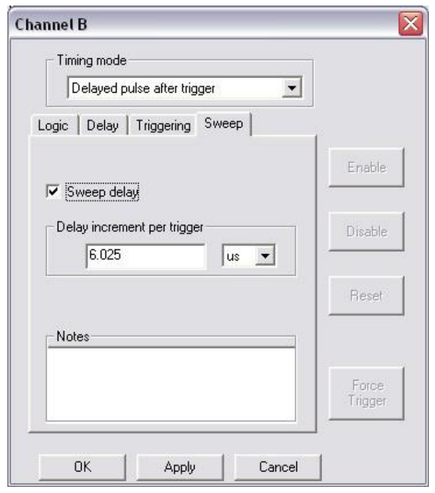
To facilitate time-delay scanning experiments, the delay of the pulse relative to the trigger can be "swept" or incremented by a specified value each time the channel is triggered. The sweep value must be positive. The increment resolution is 5 ns. However, the actual delay is rounded to the nearest 10 ns at full internal clock. For example if the increment is set to 5 ns, the actual delay is incremented by 10 ns every second trigger event.
The front panel LED for the delayed pulse after trigger will glow green until an input signal is detected. The LED will be unlit for the delay time and will glow red for the duration time. What happens next depends upon the channel settings:
| Retriggering enabled? | Edge triggered? | The channel LED… |
|---|---|---|
| no | yes or no | remains red (no more triggers accepted) |
| yes | no | glows green (waiting for next trigger) |
| yes | yes | is off; glows green once input goes low. |
To try the delayed pulse mode:
- Under General Properties, choose 100/64 (low resolution) clock mode for Channels A and B.
- Click OK to save the change. A warning may appear listing channels for which the clock range settings are invalid. Click OK to close the warning. The software will go into "offline" mode allowing you to adjust the timing settings for the listed channels.
- In Channel A's properties screen, select Delayed Pulse After Trigger.
- On the Delay tab, enter a delay of 1 s and duration of 500 ms.
- On the Triggering tab choose Retrigger N Times and set N=0. Choose Input high (level trigger).
- Click Apply.
- Go "online" and click Program > Program all channels.
- Click the external trigger button (connected via BNC cable). One second after you push it, the output of Channel A will go high for 500 ms.
- The channel LED remains red, indicating it is not ready to trigger. Push the button again. You'll see that you cannot retrigger the channel. Click the Reset button on the Channel A properties screen, the channel LED glows green and you can once again trigger the channel.
- On the Triggering tab, choose Retrigger N times, set N=5, then click Apply. Depress and hold the external trigger button. As long as the trigger is depressed (i.e., the input signal is high) the channel will continue to trigger until the limit is reached.
- Click the Reset button on the Channel A properties screen.
- Again on the Triggering tab, select Rising Input (Edge Trigger) then click Apply. Depress and hold the external trigger button. The channel will trigger only once, no matter how long you hold the button. Release the external trigger button and depress it again, and the channel will be triggered once more (switch bounce may produce triggers when the button is released).
- On the Delay tab, check Inverted output, then click Apply. The output will be the inverse of that described in Step 4.
- On the Sweep tab, select the Sweep Delay Box, then set the sweep to 0.5 s per trigger. To deselect, click the top radio button.
- Click Apply. The time delay before the output pulse will increase with each trigger.
Important Delay Timing Considerations
Once the Model 725 has begun a delay sequence, it ignores incoming trigger pulses. There is also a delay of approximately 10 µs after the completion of a delay sequence while the channel resets for the next trigger. This effect can be used to skip triggers, but if misunderstood it can cause unexpected results.
For example, in the diagram below, two trigger pulses arrive 100 µs apart. The channel is functioning in Delayed Pulse Mode, with a delay of 50 µs and a duration of 45 µs pulse. It would: receive the first pulse; wait 50 µs; send a 45 µs output pulse; and trigger again at the second pulse. But the extra 10 µs delay at the end of the sequence will cause the channel to ignore the second trigger pulse.
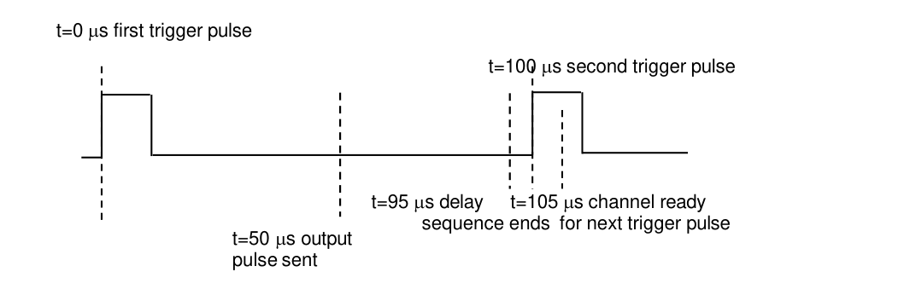
Validated Trigger Input Mode (Noise Suppression)
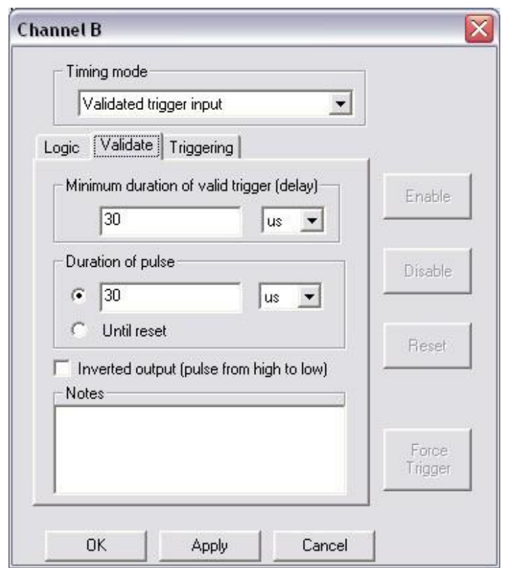
The noise suppression function eliminates false triggers due to noise on the input signal by requiring the signal to remain high (or low) for a specified duration. If the signal drops out during that period, the output will remain low and the channel will look for the next input signal. Once an input signal is deemed "valid," a pulse of user-specified duration will be sent to the channel output.
Unlike an analog filter which "smears" the signal edge, this noise suppression function digitally blocks false triggers, retaining the sharp edges on the real trigger signal.
As with Delayed Pulse After Trigger mode, you have additional controls over the channel. On the Validate tab, choose:
| Setting | Description |
|---|---|
| Minimum duration | The minimum length of an input pulse that will trigger the channel |
| Duration of pulse | The duration of the output signal |
| Until Reset | The output will remain high after a valid trigger, until the channel is reset |
| Inverted Output | Check the box to set the output high until a valid trigger. |
On the Triggering tab choose:
| Setting | Description |
|---|---|
| Normal | The channel can retrigger an unlimited number of times |
| Skip N triggers | The channel triggers only after the specified number of valid input pulses (between 0 and 2,147,483,647). |
| Retrigger N times | Limits the number of retriggers allowed between resets (between 0 and 2,147,483,647). To allow a channel to be triggered again after reaching the limit, press the Reset button on the Model 725 or choose Program > Reset Channels in timerPRO. |
| Trigger on input high | While the input is high, channel can be repeatedly triggered. |
| Trigger on rising input | Sets the channel to be edge triggered (i.e., an input signal that stays high will only trigger the channel once). |
The front panel LED for the noise suppression channel will glow green until an input signal is detected. It will then glow red until the duration period has elapsed. At this point, the LED will respond as follows:
| Retriggering enabled? | Edge trigger? | LED |
|---|---|---|
| no | yes or no | remains red (no more triggers accepted) |
| yes | no | glows green (waiting for next trigger) |
| yes | yes | is off; glows green when trigger goes low |
To try validated trigger mode:
- On the General Settings screen, select 100/64 (low-resolution) mode for Channels A and B.
- Click OK to save the change. A warning may appear listing channels for which the clock range settings are invalid. Click OK to close the warning. The software will go into "offline" mode allowing you to adjust the timing settings for the listed channels.
- In Channel A's properties screen, select Validated Trigger Input mode.
- On the Validate tab, enter a Minimum duration and Duration of output pulse of 1 second each.
- On the Triggering tab, select Retrigger N times, and set N=50.
- Click OK.
- Go "online" and click Program > Program all channels.
- Now, depress the external trigger button (connected via BNC). If you hold the button down for more than one second (the minimum duration), the output of Channel A will go high. If you release the button before one second elapses, the output will remain low and the channel will wait for another input pulse.
Timer Mode
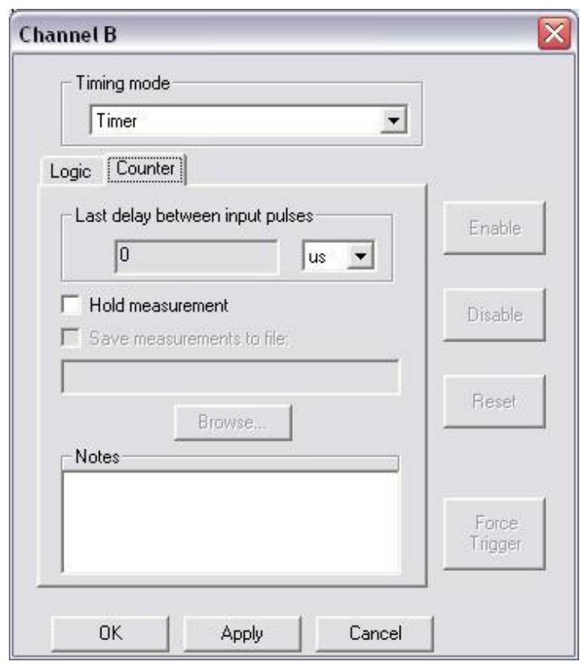
The timer mode determines the time delay between two separate input signals and reports it back to the PC. You can view the counter output in the Properties tab.
Use the channel's logic to select the input signals that will be compared by the counter (see Channel Properties: Logic above). For example, if the logic reads "in1 and in2;" the counter will determine the time delay between a pulse at Input 1 and the next pulse from Input 2.
Normally, the counter will report a value each time a pair of pulses is measured. To retain the current measurement, check the Hold measurement box; the counter will not update the delay display until this box is cleared.
The front panel LED for the counter will be green until the first trigger, red until the second trigger and off while the count data is reported and the channel waits for the input to return low. The output of a channel in counter mode is always high.
To try the Timer mode: One good way to see the counter in action is to have it compare the outputs of two clock channels. The counter will measure the difference between the successive pulses of the two channels.
- On the General Settings, select 100/64 (low resolution) clock mode. Channels B and C will be our clocks. We'll use odd delay and duration values for the clocks so that the difference between pulses will be obvious.
- Click OK to save the change. A warning may appear listing channels for which the clock range settings are invalid. Click OK to close the warning. The software will go into "offline" mode allowing you to adjust the timing settings for the listed channels.
- On Channel B's properties screen, select Clock Pulse Stream mode. Enter a High Duration of 54 ms and a Low Duration of 79 ms. Click Apply.
- On Channel C's properties screen, select Clock Pulse Stream mode. Enter a High Duration of 87 ms and Low Duration of 85 ms. Click Apply.
- On Channel A's properties screen select Timer mode.
- On Channel A's Logic tab, enter:
inA = outB and outC;(You'll learn more about channel logic in the Logic section above). - On Channel A's Counter tab, select milliseconds as the units.
- Click Disable, then click Apply.
- Lastly, go "on line" and click Send Logic on the Main screen to update the new logic for all channels.
- On Channel A's properties screen click Enable.
The time difference measurements should now appear, in rapid succession, in the Last Measured Period box on Channel A.
Now, check Hold measurement. Note that the displayed measurement does not change. Uncheck Hold Measurement, then re-check Hold measurement again to freeze another measurement.
Dynamically-Delayed Pulse Mode
The dynamic delay first measures the time difference between two pulses, like a timer. Next, it scales that difference by a user-defined factor. It subtracts an offset value, waits the duration of the dynamically calculated delay, then sends a pulse to the channel output.
Dynamically Delayed Pulse mode includes several properties tabs.
Scaling
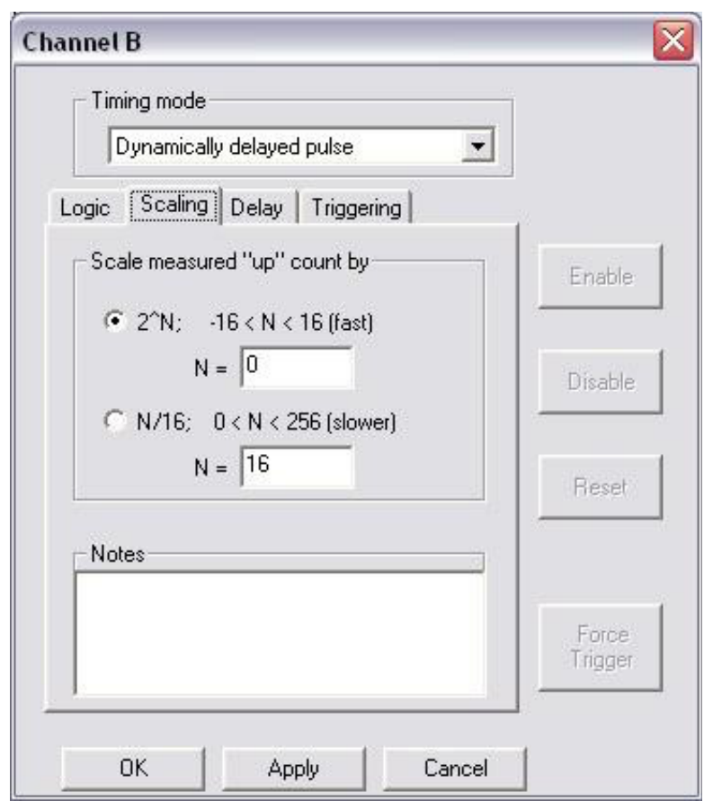
In the calculation of the delay, the measured delay between two pulses is scaled by a factor of 2N, where –16 < N < 16, or N/16, where 0 < N < 256. The former scaling is faster and a scaling of 1:1 is fastest. Scaling can typically be done at rates > 50 kHz.
The maximum delay between input pulses is 52 ms in hi-res mode (100 MHz) and 3.3 s in low-res mode (100/64). The maximum delay resulting from the scaling and offset calculations is respectively 21.47 s and 1374 s in hi-res and low-res modes. The delay must be positive.
Delay
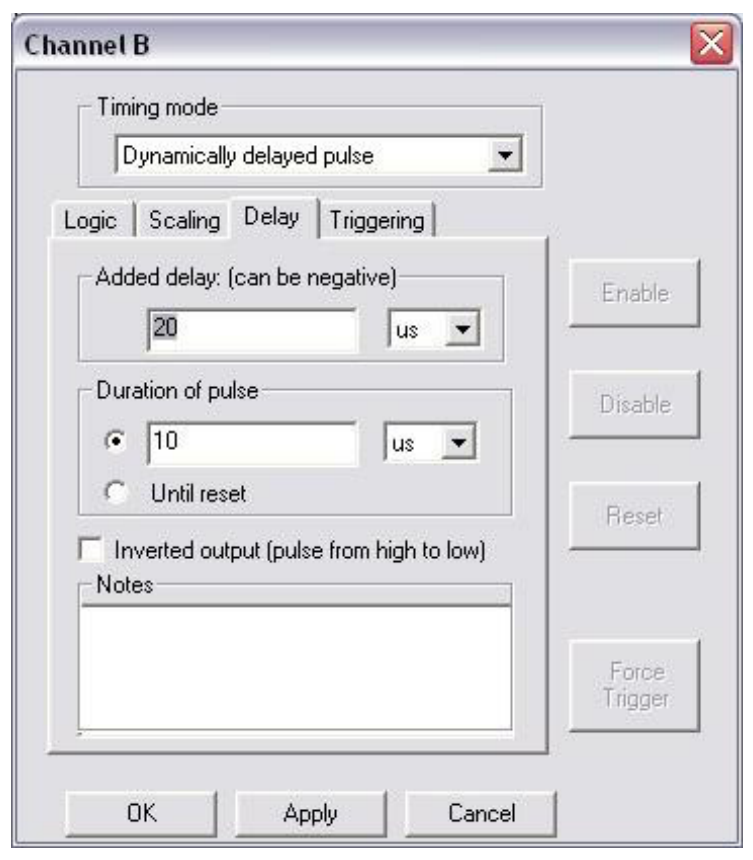
| Setting | Description |
|---|---|
| Added Delay | Set an offset value to subtract from the scaled delay length. This is useful when accounting for camera shutters or other lag times in experimental equipment. The offset value can be positive (shortens the delay time) or negative (lengthens the delay time) and the resolution is set by the time base (e.g., 10 ns). |
| Duration of pulse | The duration of the output signal |
| Until Reset | The output will remain high after a trigger until the channel is reset |
| Inverted Output | Check to set the output high until a valid trigger. The duration of the pulse and other properties are the same as for the delayed pulse after trigger. |
Triggering
The triggering options are the same as those for Delayed Pulse After Triggering mode:
| Setting | Description |
|---|---|
| Normal | The channel can retrigger an unlimited number of times |
| Skip N triggers | The channel triggers only after the specified number of input pulses (between 0 and 2,147,483,647). |
| Retrigger N times | Limits the number of retriggers allowed between resets (between 0 and 2,147,483,647). To allow a channel to be triggered again after reaching the limit, press the Reset button on the Model 725 or choose Program > Reset Channels in timerPRO. |
| Trigger on rising input | Sets the channel to be edge triggered. In other words, an input signal that stays high triggers the channel only once. |
| Trigger on input high | This option is not used in this mode. |
| Alert host computer following trigger | Sends a "ping" to the PC upon completion of the trigger cycle. |
The front panel LED for a dynamically-delayed trigger will remain green until a valid input signal is detected. When an input signal is detected, the LED will glow red until the output signal is sent. At this point the LED will return to green if retriggering is allowed, or it will glow red to indicate that no more input signals will be accepted.
To try the dynamically-delayed pulse mode: You can simulate the experiment above using the external trigger button, connected via BNC to In 1, to represent Sensor 1, and a delayed pulse after trigger in Channel B to represent the signal from Sensor 2. Connect your oscilloscope to Output C to view the results.
- On the General Settings screen, select 100/64 (low-resolution) mode for Channels C and D (and optionally for Channels A and B).
- Click OK to save the change. A warning may appear listing channels for which the clock range settings are invalid. Click OK to close the warning. The software will go into "offline" mode allowing you to adjust the timing settings for the listed channels.
- On Channel A's Properties screen select Validated trigger input mode.
- On Channel A's Validate tab set the Minimum Duration of Valid Trigger to 10 ms to debounce the switch. Set the Duration of Pulse to 30 µs.
- On Channel A's Logic tab, enter:
inA = not in1;Click Apply. - On Channel B's Properties screen select Delayed Pulse After Trigger mode.
- On Channel B's Delay tab set both the Delay after trigger and Duration of pulse to 100 ms.
- On Channel B's Triggering Tab select Normal to allow retriggering.
- On Channel B's Logic tab enter:
inB = outA;This logic will cause the delayed trigger to pulse 100 ms after a signal from Channel A. - Click Apply.
- On Channel C's Properties screen select Dynamically Delayed Pulse mode.
- On Channel C's Scaling tab select 2^N and set N = 1.
- On Channel C's Delay tab set the Added Delay to –200 µs and the Duration of pulse to 100 ms.
- On Channel C's Triggering tab select Normal to allow unlimited retriggering.
- On Channel C's Logic tab enter:
inC = outA or outB;This logic routes the two pulses from A and B to channel C. Note that there must be no overlap of these pulses or the dynamic delay will not work properly. - Click Apply.
- Go "online."
Now the test is ready. Depress and hold the external trigger button. Output A will transition high, causing the delayed trigger in Channel B to begin its count. When Channel B sends its output pulse, the dynamic delay in Channel C will calculate the time difference (100 ms), multiply it by 32/16, and subtract the 200 µs offset. 199.8 ms after receiving the signal from Channel B, Channel C will send a 100 ms output pulse.
Toggled Output Mode
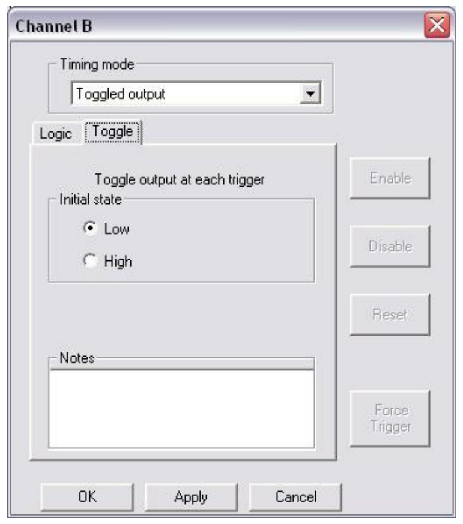
This mode toggles its output state upon every input pulse. It functions like a flip-flop and is useful for a variety of logical and control purposes. The minimum input-pulse state duration is 10 ns and the edge-to-toggle delay is < 20 ns.
The only user settings for this mode are the initial state, which may be either low or high. The front panel LED for the channel will glow green when the output is low or red when the output is high.
Dynamic Delay Compensation Mode
Some electronically triggered devices exhibit significant drift due to temperature changes, time, etc. For example, the delay between a trigger pulse and the output of some lasers may drift over several microseconds with temperature and aging. This drift may be relatively slow, but inconvenient to compensate.
Dynamic Delay Compensation mode is useful for taming the timing of these instruments. In this mode, you send a "trigger" pulse when you want to trigger a device, followed by an "indicator" pulse that shows the actual duration of the device's function, perhaps from a sensor. The channel measures the actual delay between the trigger pulse and the indicator pulse. It then adjusts the applied delay between the trigger pulse and output pulse so that the delay between the trigger and indicator pulse is precisely the specified Desired Delay.
Dynamically Delay Compensation mode includes several properties tabs.
Delay
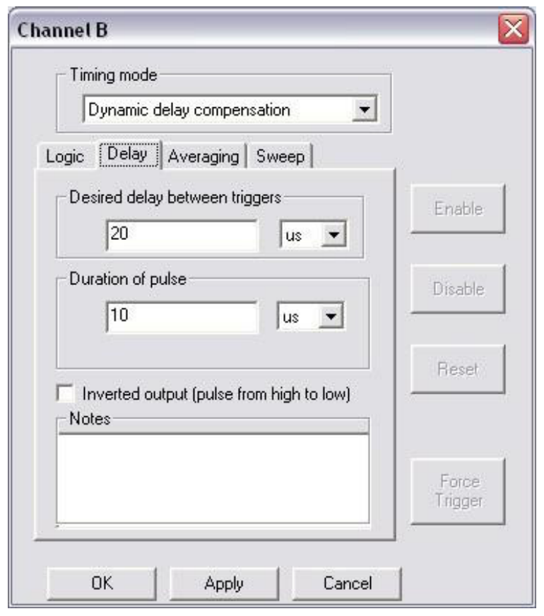
| Setting | Description |
|---|---|
| Desired delay | The delay between the trigger and response signals that timerPRO will attempt to maintain. |
| Duration of pulse | The duration of the output signal |
| Inverted Output | Check to set the output high until the next valid trigger. |
Averaging
| Setting | Description |
|---|---|
| Delay Averaging | Determines how the delay compensation will be calculated. Choose None to calculate a new delay compensation time with each trigger pulse; or, choose to use an average compensation based on the last 2 to 256 trigger pulses. Averaging is performed with an infinite impulse response filter (i.e., a conventional one-pole low pass filter). The number of triggers sets the filter response time. |
Sweep
The delay between the trigger and response can be "swept" or incremented by a specified value each time the channel is triggered. The sweep value must be positive. The increment resolution is 5 ns. However, the actual delay is rounded to the nearest 10 ns at full internal clock. For example if the increment is set to 5 ns, the actual delay is incremented by 10 ns every second trigger event.
To try the dynamically-delayed compensation mode: To test this mode, you will need an oscilloscope. Setup the Model 725 as shown below:
| Channel | Configuration |
|---|---|
| Channel A | Clocked pulse stream: High duration: 10.000 µs; Low duration: 10.000 ms. This will act as the Trigger pulse. |
| Channel B | Delayed pulse after trigger: Delay: 1.000 ms; Duration 10.000 µs. Trigger Input Logic: inB = outC; This will act as the Indicator pulse. |
| Channel C | Dynamic Delay Compensation: Delay: 2.000 ms; Duration: 10.000 µs. Averaging: None (1 trigger). Trigger Input Logic: inC = outA | outB; |
Connect a cable from Channel A to one oscilloscope input and a cable from Channel B to another oscilloscope input. If you have more channels, you can also connect Channel C to the oscilloscope.
The delay between channel A (Trigger) and B (Indicator) will be exactly 2 ms, even though you never specified to Channel C the delay required to trigger Channel B at the right time. The mode determines the delay by observing the indicator pulse.
Next, increase or decrease the delay of Channel B between 20 µs and 2 ms. For the first cycle after the adjustment, the delay between A and B will be something other than 2 ms, then every following cycle the delay will be precisely 2 ms.
To account for sensor noise and device-timing jitter, you can use the Average Delays option on Channel C's Averaging tab. Set the value to 256 triggers and again adjust the delay on Channel B between 20 µs and 2 ms. The timing error will not resolve itself in a single cycle as before; instead, the timing relaxes to the correct value over a large number of cycles.
Now, suppose you need to do a dynamic timing adjustment but the indicator trigger occurs very quickly, perhaps even during the Dynamic Delay Compensation output pulse. Starting with the setup described above, make the following changes:
- On Channel B set the input logic to "
inB = outD;", the Delay to 10 µs and the Duration to 10 µs. - On Channel C set the Desired Delay to 20 µs and the Duration to 8 µs. Leave the Averaging at 256 for now.
- Set Channel D to Delayed Pulse After Trigger. Set the input logic "
inD = outC;", the Delay to 1 µs and the Duration to 10 µs. - Click Program > Program All Channels.
- Disconnect the cable from OutB and connect it to OutD instead.
Channel D's output now represents a fast-arriving indicator pulse. It arrives 1 µs after Channel C starts its 20 µs-long pulse, before Channel C starts looking for the indicator pulse. Because it arrives so soon, the pulse cannot be logically routed directly to Channel C; instead, it is routed to Channel B, which will provide a precision "delayed indicator" pulse. The delay of Channel B will be added to the "Desired Delay" of Channel C.
On the oscilloscope you will see that the delay between pulses on Channels A and D always settle precisely to 10 µs (Desired Delay - Channel B delay), when the delay of Channel D is adjusted anywhere between 35 ns to 3.5 µs, simulating drift. It may take several seconds before you observe the settling of the delay because of the Averaging value of 256 triggers. Reduce the Averaging on Channel C to decrease the settling time.
Three timing issues should be considered when using dynamic delay compensation mode:
- Ensure that the trigger and indicator pulses never overlap in time.
- Ensure that the properly compensated pulse occurs no less than 6.4 µs after the trigger pulse.
- Ensure that the indicator pulse begins no less than 1.2 µs after the END of the output pulse of the delay compensation channel.
4 Running Experiments
Once you've created a program you're ready to set up and perform your experiment.
Storing and Recalling Experiment Files
As mentioned earlier, an experiment file is a document which resides on your PC, containing all of the logic, properties, and settings profiles for a particular experiment. Experiment files bear the .trg extension.
To save an experiment, choose File > Save As. Name the file, then store it on your hard drive in an accessible place.
To reuse an experiment file, choose File > Open, and locate the file. When you click OK, the file's settings will appear in timerPRO. Click Send Properties, then click Send Logic to download the settings to the Model 725. You can also choose Program All Channels and Program Logic from the Program menu.
To print a text summary of the settings in the current experiment, choose File > Print.
Front Panel Controls and Indicators
The front panel of the Model 725 is designed to help you run experiments without computer control. This functionality allows you to program the unit at a workstation, then to move the unit to the experimental environment.
Channel LEDs
As mentioned earlier, the LEDs for each channel provide information on each channel's status:
- A green light on a channel typically indicates that the channel is waiting for an input trigger. When a channel is in Fixed Output, Clock Pulse, Output=Input or Toggled timing modes, the green light indicates that the output is currently LOW for that channel.
- A red light typically indicates that the channel is in the process of triggering. When a channel is in Fixed Output, Clock Pulse, Output=Input or Toggled timing modes, the red light indicates that the output is currently HIGH for that channel.
- When a channel indicator is steadily off, the channel is disabled (see Enable/Disable Channels below). The channel indicator also turns off during delays and while waiting for the input to return low for an edge trigger.
The following chart provides an overview of the front panel channel LEDs:
| Mode | Off | Green | Red |
|---|---|---|---|
| Fixed Output | -- | Output is Low | Output is High |
| Output = Input (Passive) | -- | Output is Low | Output is High |
| Clocked Pulse Stream | -- | Output is Low | Output is High |
| Delayed Pulse After Trigger | In delay period | Waiting for trigger; if retriggering is on, light will glow green once input goes low | In duration period; if retriggering is off, light remains red after duration period |
| Validate Trigger (Noise Suppression) | -- | Waiting for trigger; if retriggering is on, light will glow green once input goes low | In duration period; if retriggering is off, light remains red after duration period |
| Counter | Count data is being reported, waiting for input to go low | Waiting for first trigger pulse | Waiting for second trigger pulse |
| Dynamic Delayed Pulse | -- | Waiting for trigger; if retriggering is on, light will glow green once input goes low | In duration period; if retriggering is off, light remains red after duration period |
| Toggle | -- | Output is Low | Output is High |
ALL Channel LED
The All Channel LED shows the overall status of the channels.
A green LED indicates that the external inputs and outputs are enabled and functioning normally. A red LED indicates that the external inputs and outputs are frozen. (See Running Experiments: Disable/Enable channels below).
Selecting a Channel from the Front Panel
Each front panel function requires that you select a channel (or ALL channels) and a function.
To select a channel, click the channel button. The channel LED will glow brightly, as will the available Function buttons. The ALL channels button will function similarly to select all channels. You can now perform one of the front panel functions on that channel.
In the image below, the F channel button has just been pressed. The buttons for the four available functions (Enable, Disable, Trigger and Reset) glow yellow.
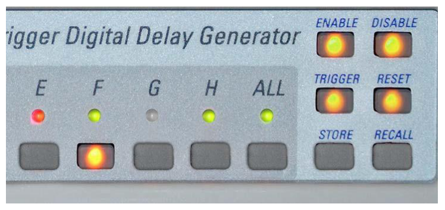
Performing a Front Panel Function
Front panel functions can be accessed in one of two ways:
- select a channel (or ALL channels), then choose a function
- select a function, then choose a channel (or ALL channels). There is no significant difference between these two approaches.
In the image below, the Enable button has just been pushed. The channel buttons and the ALL channel button are lit. Pressing one of these buttons will now enable the channel(s).
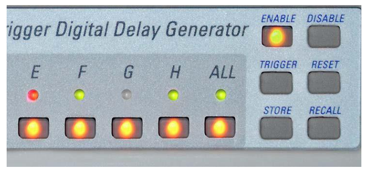
Enable/Disable ALL
Occasionally you'll need to abort an experiment in progress, due to equipment problems, etc. The quickest way to shut down an experiment is to disable the inputs and outputs of the Model 725. To do so, click the Disable button, then click a particular channel button, or the ALL channels button. The inputs and outputs for all channels will be immediately frozen.
Following a Disable command, you can re-enable the inputs and outputs by clicking the Enable button, then clicking a channel button or the ALL channels button.
Enable/Disable Channel
It is sometimes convenient to disable or suspend a channel temporarily. The Enable/Disable channel functions provide this capability from the front panel.
You can also disable a channel, or all channels, from within timerPRO (see timerPRO Software Interface: General Settings: Disable/Enable Channels).
Trigger a Channel
This function lets you simulate an input trigger on a channel, regardless of the channel's logic settings. This is a useful way to initiate a timing sequence without actually performing the live experiment. You can also trigger a channel from within the timerPRO software (See Channel Properties: Force Trigger above).
Reset
The Reset button returns the selected channel or ALL channels to the last programmed settings. It resets and reinitializes retriggering counters and the delays of any channels that are undergoing a delay sweep.
Store/Recall Settings Profiles
As you know, you can store 64 different "Settings Profiles" in the Model 725. A Settings profile includes properties, variables, and logic for each of the eight channels. Storing Settings profiles lets you switch between settings while running an experiment, to test different timing criteria, initial conditions, etc., without re-plugging or reprogramming.
Settings profiles are enumerated AA, AB…, BA, BB… HH, and they are accessible under those letters from the Model 725.
To store the current settings in a Settings profile:
- Click the Store button
- Click the two-letter combination for the Settings profile.
Similarly, to recall a stored Settings profile:
- Click the Recall button
- Click the two-letter combination for the Settings profile.
You can recover these settings even after the unit has been turned off or disconnected. The most recently used setting is automatically loaded when the Model 725 is powered up. If you attempt to recall an invalid setting, the power LED flashes red and the system retains its previous setting.
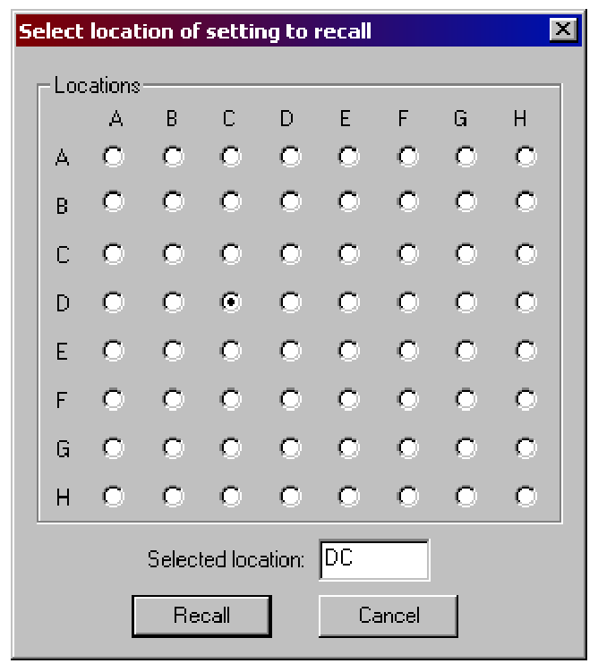
To recall a setting profile from within timerPRO:
- Choose Program > Recall Setting…
- Click on or type in the desired setting (case insensitive).
- Click Recall.
To store a setting profile from within timerPRO:
- Choose Program > Store Setting…
- Click on or type in the desired setting (case insensitive).
- Click Store.
5 Glossary
| Term | Definition |
|---|---|
| Apply | Sends a channel's current timing settings to the Model 725. |
| Baud Rate | The speed of communication via the Com port. |
| Channel | One of eight internal signal paths in the Model 725. |
| Channel Input | The signal which feeds one of the eight channels. A channel input can be triggered by signals from any combination of signals from the input jacks and/or channel outputs. |
| Channel Settings | The logic and timing settings which determine how a channel functions. |
| Com Port | A serial port on a PC computer. The Model 725 communicates with the computer via an RS-232 cable connected to a Com port. |
| Controller | The Model 725 hardware unit. |
| Timer Mode | This timing mode determines the time delay between two separate input signals. |
| Delay | The time between the arrival of an input trigger and the release of an output pulse. |
| Delayed Pulse After Trigger | In this timing mode, a channel waits for an input signal, waits a specified delay time then sends a pulse to the channel output. |
| Duration | The length of an output pulse. |
| Dynamic Delay Compensation | This mode is designed to dynamically adjust trigger timing to compensate for drift in a laser or other electronics. |
| Dynamically Delayed Pulse | This timing mode measures the time difference between two pulses, scales that difference by a user-defined factor, waits the duration of that calculated delay, then sends a pulse to the channel output. |
| Edge Triggering | This channel setting ensures that an input signal which stays high will only trigger the channel once. |
| Enable/Disable I/O | A function which disables or suspends a channel (or all channels) temporarily. The function is available on the Model 725 front panel and on the channel settings screens. |
| External Clock | The "Ext Clk" input on the back of the Model 725 allows the time base to be controlled by an external source. |
| Firmware | The internal code of the Model 725 controller. The firmware, as well as the timerPRO software, can be field-upgraded. Latest upgrades are available at www.berkeleynucleonics.com. |
| General Settings | The settings which govern the function of all channels. |
| Global Variable | A shorthand symbol for a logical assignment that may be used repeatedly throughout a program. |
| High Resolution | A timing mode in which the clock operates at 100 MHz. |
| Implement Logic | A menu function which sends the logic for all channels to the Model 725. |
| Input | One of eight inputs on the back of the Model 725. Signals from these inputs can be combined to trigger any channel. |
| Local Variable | A preset variable that is used in the logical assignments that control channel triggering. |
| Lock/Unlock Panel | A function that disables all front panel functions (including the power button) to avoid tampering / accidental changes when the Model 725 is embedded in an experiment. |
| Logic | The set of assignments that determines when a channel will trigger. |
| Low Resolution | A timing mode in which the clock operates at 100/64 MHz, or 1.56 MHz. |
| Noise Suppression | Also called "Validated Trigger Input" mode. This timing mode eliminates false triggers due to noise on the input signal by requiring the signal to remain high (or low) for a specified duration. |
| Output | One of eight physical output jacks on the back of the Model 725. The output signals are determined by the eight timing channels. |
| Parsing | Parsing occurs when you click the Apply button. timerPRO software checks your logic assignments and changes them to code for the Model 725 controller. |
| Predefines | A set of standard variables and operators that can be used in logic assignments. |
| Program All Channels | A function which sends all logic and timing settings to the Model 725. |
| Programmable Logic Controller | A device which combines logic and timing processors for precise control of physical experiments. |
| Recall | Re-loads a stored Settings File. |
| Reset | Returns all channels of the Model 725 to their waiting condition. Retriggering Counters and delay settings are reset as well. |
| Retrigger | A channel setting that allows the channel to be triggered more than once, if subsequent trigger pulses are received. |
| Scaling | In the Dynamically Delayed Trigger timing mode, scaling determines the ratio of the distance between the two input sensors to the distance of the target. |
| Settings File | A PC file (with a .trg extension) that contains all the logic and timing settings for an experiment. Up to 256 Settings Files can be stored and recalled from the Model 725. |
| Skip Triggers | A setting that allows a channel to trigger only after the specified number of input pulses. |
| Store | Load a Settings File into the memory of the Model 725. The settings can be recalled later. |
| Sweep | In the Delayed Pulse After Trigger timing mode, this setting facilitates time-delay scanning experiments in which the delay of the pulse relative to the trigger must be incremented by a specified value each time the channel is triggered. |
| Time Base Settings | These General Settings determine the timing resolution of the Model 725. Higher resolution allows 10 ns timing resolution, while low resolution allows delays over 1300 seconds. |
| Timer | Timer mode determines the time delay between two separate input signals and reports it back to the PC. |
| Timing Mode | The eight functions that each channel can perform. |
| Toggle Mode | This mode toggles its output state upon every input pulse. |
| Trigger | An input signal that initiates a channel function. |
| timerPRO (software) | The control software for the Model 725. |
| Trigger Validation Mode | Also known as "Noise Suppression" mode. This timing mode eliminates false triggers due to noise on the input signal by requiring the signal to remain high (or low) for a specified duration. |
| Update Firmware | This menu function allows you to upgrade your Model 725's firmware to the latest version, available at www.berkeleynucleonics.com. |
This manual © 2008 Berkeley Nucleonics Corporation. No part of this document may be reproduced or distributed without the consent of Berkeley Nucleonics.